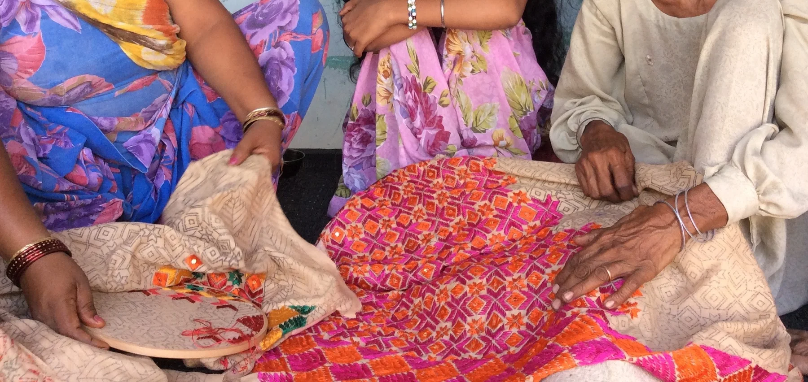

HOME & CRAFT
The everyday handmade
Objects shaped by patience, skill and generations of knowledge.
A SHARED DIGITAL HOME FOR PUNJAB
Discover the Punjab we inherited across today’s borders — its fields, homes, craftsmanship, everyday objects and the stories that keep them alive.
MORE THAN THE PAST
From the rhythm of a hand-operated charkha to the shape of a farmer’s plough, ordinary objects tell extraordinary stories. Punjab Heritage is a growing digital archive dedicated to documenting them with care.
Discover our purpose →EXPLORE THE COLLECTIONS
Image records, source details and usage rights are documented in the visual archive.
THE DETAILS THAT DEFINE US
Every tool, recipe, craft and custom deserves to be remembered — not as a relic, but as a living part of who we are.
Read heritage stories ↗Phulkari photograph: Sheebamadanloewinger · CC BY-SA 4.0 · source & licenceOBJECTS WITH STORIES
Objects shaped by patience, skill and generations of knowledge.

Tools and practices that connected families to their fields.

Traditional skills carried forward through human hands.
HELP KEEP THE STORIES ALIVE
Share an old photograph, an object, or a memory from your family or village.